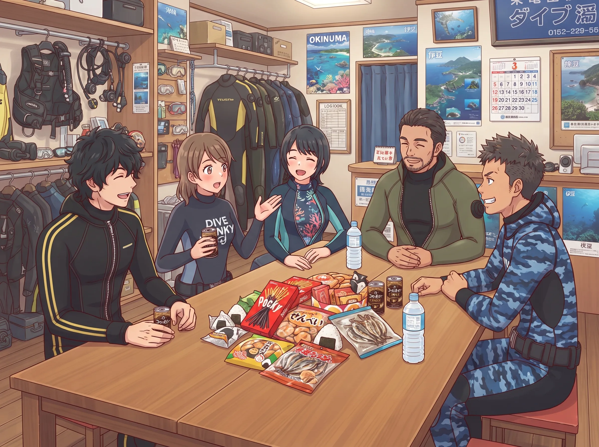
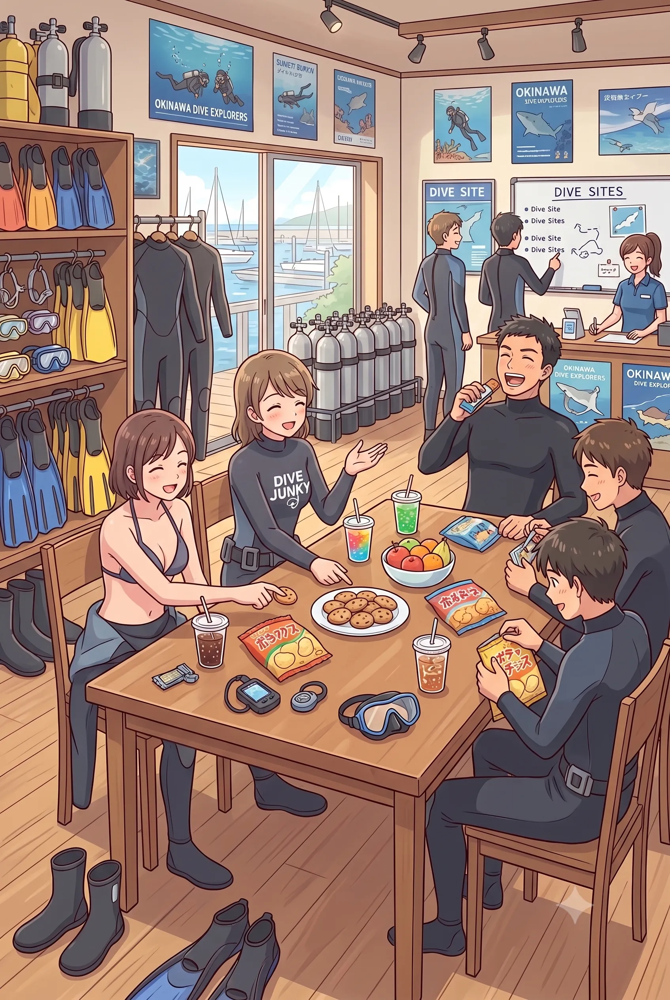
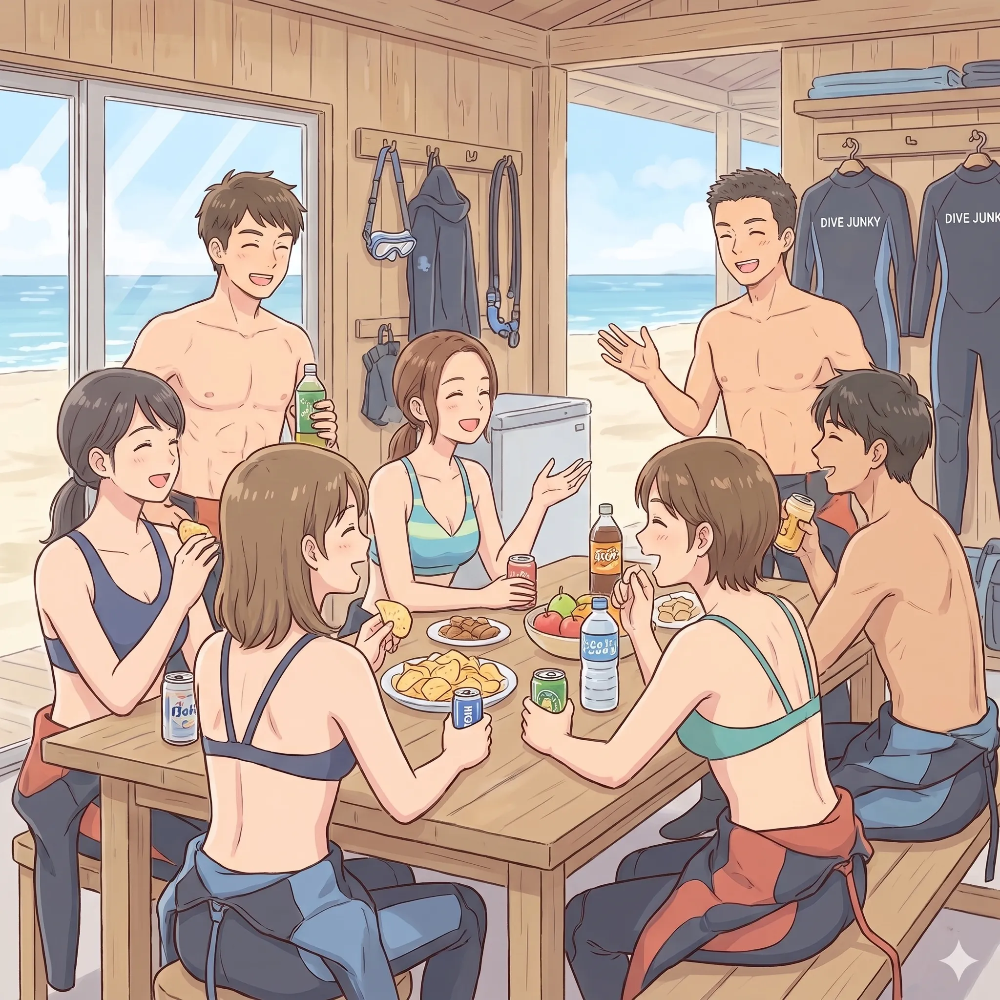

The road Orz passed by 2026 年 08 月
08 月 11 日 ( 火 )
Dive #194 ダイバーとしての個人史 #3 昔よく見られたショップ文化
SNS を眺めていてふと思い出した。思い出したきっかけはわからないのだけれど。
でもずっと忘れてたけど思い出した。
1980 年代以降にダイバーになった人間って講習が終わってもバディになってくれる友達が見つかんないから、みんなショップを頼ってたんだった。
思い出したわ。

そうダイバーはダイバーの
「と・も・だ・ち・が・い・な・い・か・ら」
ショップに通ってた。仕事が終わったら用事もないのにショップに集まってた。
だからショップに通うダイバーの友達がいない寂しいぼくらが (笑)、ショップに集まって友達になっていってた。
ぼくらがショップを中心とするダイバーのコミュニティを作っていってた。作ろうとしてたわけじゃないけど。
でもショップに行けば友だちがそこにいたから、ぼくたちはショップに集まった。
だからぼくらの頃のダイビングショップって、どことなく部室っぽい感じがあった。あったような気がする。
それが嫌いって人もいたけれど。
でもあのまるで部活のような感じが、先輩であるインストラクターからいろいろ教わるって感じになってたよな、って思う。ツアー中も、海のこととか、水中で何をどう判断するのかとか教わってたもんな。
今はダイビングショップにもダイビングサービスにもそんな雰囲気は消えてしまっているけど。
コミュニティだからみんなが参加するような練習会もあったし。オーナーもそういったものを企画してくれたりもした。そら、昔のダイバーのほうがうまくなるわいな。
だから今の時代に「あれ？シニアの人らの方がダイビングうまいんじゃね？」なんてのが見てとれるような気がする。体力は圧倒的に若い人のほうがあるけれど。
こんな環境で何が起きていたのかと言うと、やはりダイビングショップではあるので、話題がダイビングのことが中心になりがちだった。当たり前なんだけど。
そんな話題のなかには自然とダイビングのスキルだとか、知識だとか、海の生き物の話とか、海そのものの話とか、どこそこに行ったとか、あるいは事故に関する話とか、インストラクターになって何がどう変わったのかとか、そういったことをゆるーい雰囲気でワイワイと話していた。
そういった密度の濃いコミュニティにいると、先輩に当たるような人がレスキューを受けたり、MSD に進んだり、中にはぼくのようにアシスタントインストラクターに進んだり、あるいはダイブマスターに進んだり、なかにはインストラクターになってしまう身近な人出てきたりする。ぼくはアシスタントインストラクターになっても、ずっと大したことがないダイバーだったけど。
でも自然と上のコースに進む人たちや、プロに進むような人たちもでてきて、そんな人たちが自然とロールモデルに意図せずなっちゃって、自分もやろーっとって進んでいったりとかしてたな。
そんなことを思い出した。

ぼくもきっかけは大瀬崎のダイバー消失事件だったけど、でもベースとしてはそういったコミュニティ文化はやっぱりあったな、って思う。
ぼくの場合、1990 年の円月島のレスキュートレーニングで体験を共有した小寺くんがいたから自然とバディシステムを重視するようになったし、ダイバーとして向上しようと思った。
でも仮にそれがなくてもショップに集まっていた友だちは、やっぱりとても大切だから、やっぱりバディシステムを重視しただろうし、仲間の安全をもっと、とは思っていただろうし、そもそも小寺くんと一緒に潜ることができなくなってからも、友だちのためにダイビングをうまくなりたいと思っていたし、レスキューも大事だし、信頼されるバディでありたいって願っていたな、とは思う。
その延長にインストラクターと開業がやっぱりあったと思う。
そうそう。昔スポーツクラブのエグザスがまだあった頃になる。
エグザスにたまたま行ったときに (ダイビングプールがあるので)、そこのとあるインストラクターになりたての女の子が、そのエグザスのお店に通ってる他のゲストの女の子と話してるのを見て会話が聞こえてきた。
「インストラクター合格おめでとー」
「えへへへ、ありがと」
「かっこよかったよ」
「ありがと」
「これからお店を手伝ってくの？」
「たぶん、頼まれたら」
なんて会話をしていて、インストラクターとそうでない普通のダイバーが客同士目線で話をしてるのがなんかよかった。
ぼくらもそうだったけど。だって友達関係だったのがいきなり客とスタッフに変われないし。
同じ客という立場の人間のうち誰かがインストラクターやダイブマスター、数は少ないけれどアシスタントインストラクターを目指し始めたりする。
そしてすぐ横で友だちのダイバーが全部見てたりする。失敗してみっともない姿を晒してるのも。
「器材全部手で持ってプールに入って水中で全部身につけてるけど、あれってベイルアウトって言うんだって」
「あ、水底につく前に全機材放り出して水面にダッシュしてる」
「やっぱ、難しいんだ」
「あ、今度はうまく行った」
全部見られてる。
「あ、今度はスキンダイビングで３点セットを水底に置いて立泳ぎしてる」
「あ、潜った」
「マスクつけて、スノーケルクリアして、マスククリアしてる」
「あ、浮上してる。フィンは？」
「息が持たなくて履けなかったとか言ってる (笑)」
「頑張れ頑張れ」
「今度は全部器材身につけた」
「もっと落ち着いてやれ、きれいにやれとか言われてる (笑)」
「立泳ぎが長すぎるって」
「ふーん、立泳ぎが長すぎると息が持たないんだ」
「ウェイトをあと 1kg 増やせとかも言われてるね」
「あ、なんか少しずつきれいになってきてるね」
必死な姿を全部見られてる。

こんなだったので、アシスタントインストラクター、ダイブマスター、インストラクターは、実は普通のファンダイバーと地続きだっていう共通認識があった。あったと思う。
こんななのでインストラクターもダイブマスターもアシスタントインストラクターも特別な存在じゃなかった。普通のファンダイバーの先にいる人だった。
もしかすると今のダイバーの不幸って、実はインストラクターやダイブマスター、アシスタントインストラクターって実はもっと身近な存在だってわかんなくなってることなのかも知れない。
もちろん当時からインストラクターやリーダーシップダイバーはプロフェッショナルとして教育されてるわけだけど、でも普通のダイバーの延長にいて、延長にいるだけに過ぎないってこうとがみんな共有されてて、今のようにブラックボックス化されたように見えない化されてしまうと、何か特別な能力を持った特別な人って誤解されてしまってるのかも知れない。
一方で今ではショップのコミュニティ機能が低下してしまったから、今のダイバーって行き場がなくなってしまったのかもしれない。
今の多くの人は行き場を求めてダイビングサービスにそれを求めているようにも見える。
でもダイビングサービスは現地にあるので、都市型ショップのように仕事帰りに毎晩寄るわけにもいかない。ダイビングにどっぷりつかる環境としてはどうしても、かつての都市型ショップと比べると薄くなってしまう。
濃い受け皿がないからネットに頼らざるを得なくて、かつての 2ch 文化由来の悪しき影響を受けまくって、なにをどうしたらいいのかわからなくなってるのかもしれないね。Yahoo 知恵袋に頼らざるを得なくなったり。
知恵袋では (たぶん) 現役のショップオーナーやインストラクター、たまにおかしなことをいうダイブマスター、たまに暑苦しすぎる元アシスタントインストラクターがいたりするけれど。
そんなことを考えると、今の都市型ショップはショップとしては洗練されているけれど、コミュニティとしての機能は減ってしまって、やっぱり人と人のつながりは薄れてしまっていて、カードを取ったら離れる場所になってしまったのかもしれない。
新しい形のコミュニティは必要な気がする。やっぱり。
少なくともネットは人を分断するように働きやすいように感じる。これはもう 2ch があったころからそうだったので。現在いろいろ取り組んでる人はいるけど。でもあまりうまくってないように見える。
でもそいういったことからも、今の若い子たちって可哀想だなって気がやっぱりしてしまう。
ぼくらの世代は、知らない人の間でもショップに行けばあのコミュニティがあった時代を共有してる。だから初めてあった人で「あの時代はこうだったよね」って一気に距離が縮まる。
一気に年寄りが仲間になるので、若い人からしたらきっとわけわかんないだろうけど。こっちがおいでおいでしてても、老害集団にしか見えてなさそうだし。
でもたまに SNS で同年代の人、繋がりませんか？なんて書き込みを見かけるけど、やっぱり寂しいんだろうなって思う。ぼくらもそうだったし。
ぼくらは街のダイビングショップに集まったけど。
ショップでいきなり宴会を始めようとしたりとか。そしてそれを見たショップオーナーが、ちょっと待って、うちは飲み屋じゃないからそれはやめて、って微妙な表情で言ったり (笑)。
こんな場を作ってくれてるオーナーに感謝したいから、みんなで持ち寄ってなにか送ろうか、とか相談したり。
今では都市型ショップがこんなコミュニティとしての役割を失っていることが、それが良いことなのか悪いことなのかぼくにはわからないけれど、ときどきあの頃が無性に恋しくなって泣きそうになってしまう。
- Category :
- #Records of Orz's Road
- #思い出話
- #ダイビング
- #スクーバダイビング
- #都市型ショップ
- #ダイバーズコミュニティ
- #友だち
- #仲間
- #仲間と友だちとの思い出